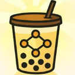
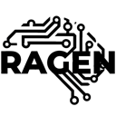

Best tools for training and fine-tuning agents (2026)
Platforms and open-source libraries for fine-tuning models and training agents with reinforcement learning, so they get better at your specific tasks. We list 10 tools for training and fine-tuning agents below, each with a link-checked page, pricing as the maker states it and alternatives.
Updated
10 tools: 7 open source, 1 source-available, 1 free or freemium, 1 paid, usage-based or enterprise.
Kiln
Free desktop app and open-source library for building AI systems with evals, RAG, agents, fine-tuning and synthetic data in one workbench.
Added
Agent Lightning
Microsoft's lightweight trainer that improves existing agents with reinforcement learning through a model proxy, without rewriting the agent's tools or control flow.
Added
NVIDIA TAO Agent Skills
NVIDIA's vision-model post-training toolkit, now packaged as agent skills so Claude Code or Codex can fine-tune, optimize and export vision foundation models from plain-English prompts.
Added
OpenPipe
Reinforcement learning tooling, including the ART library, to train better agents.
Added
Oumi
Open platform for fine-tuning, evaluating and deploying open agentic LLMs and VLMs.
Added

AReaL
Reinforcement learning system for training LLM-based agents.
Added
Prime Intellect
Decentralized compute and open RL environment hub for training agentic models.
Added

RAGEN
Reinforcement learning framework for multi-turn LLM agents.
Added
CoreWeave Forge
One product to run, observe, evaluate and post-train agents (W&B, OpenPipe, sandboxes).
Added
Together AI
AI cloud for running, fine-tuning and serving open models.
Added
GitHub repos (8)
| Repo | GitHub stars | Licence | Last push |
|---|---|---|---|
| 18,733 | MIT | 2026-10-09 | |
| OpenPipe ↗ | 10,802 | Apache License 2.0 | 2026-10-12 |
| 9,400 | Apache License 2.0 | 2026-10-15 | |
| AReaL ↗ | 5,839 | Apache License 2.0 | 2026-10-19 |
| 5,195 | — | 2026-10-17 | |
| Prime Intellect ↗ | 4,713 | MIT | 2026-10-19 |
| RAGEN ↗ | 2,824 | MIT | 2026-08-23 |
| 95 | Apache License 2.0 | 2026-10-16 |
8 repos. Stars and licence come from each repo, checked when the listing was last verified.
Browse these categories
Related tasks
Tools are matched to tasks by category, use cases and what each tool says it does. Missing one? Submit it free.